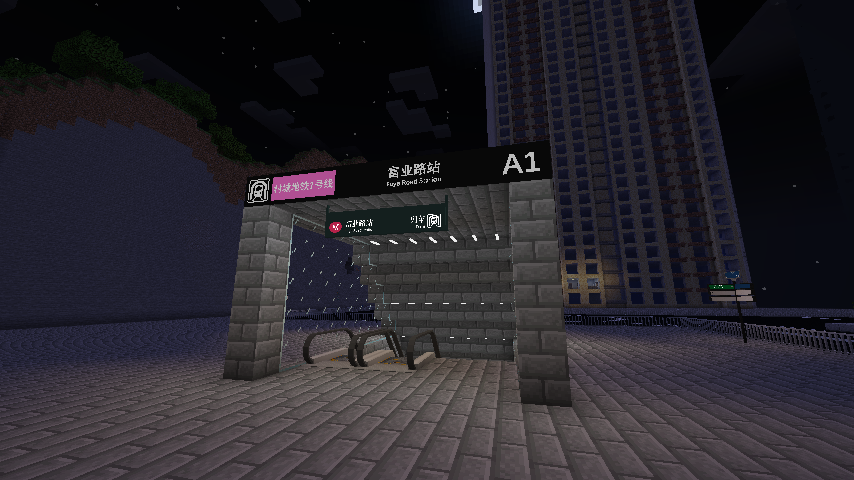
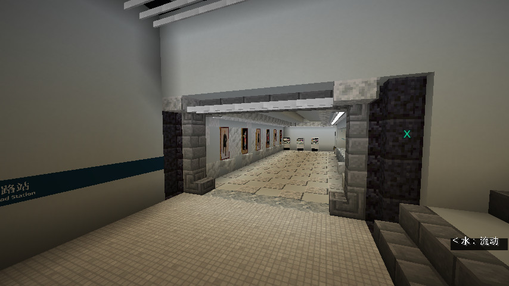
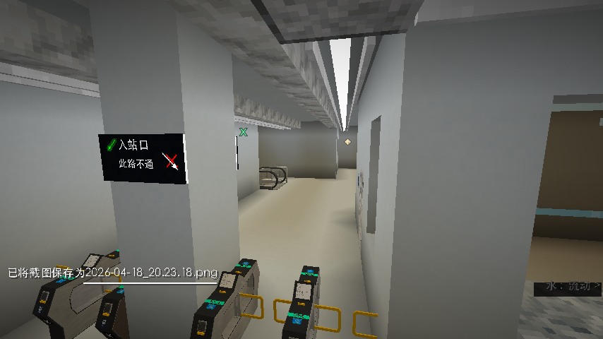
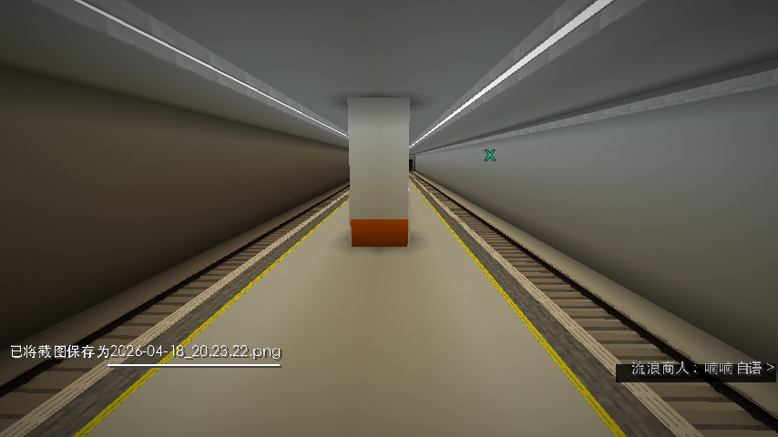

富业路站是村城地铁1号线的始末站，位于村城中心商业区，是服务器重要的交通枢纽之一。
🚶 乘坐指引




跟随以上步骤即可顺利进站乘车。如需换乘其他线路，请留意站内导向标识。
乘车提示
本站为1号线始发站，列车通常停靠在1号站台。请留意站台广播及乘客资讯显示屏的列车到站信息。
富业路站是村城地铁1号线的始末站，位于村城中心商业区，是服务器重要的交通枢纽之一。




跟随以上步骤即可顺利进站乘车。如需换乘其他线路，请留意站内导向标识。
本站为1号线始发站，列车通常停靠在1号站台。请留意站台广播及乘客资讯显示屏的列车到站信息。